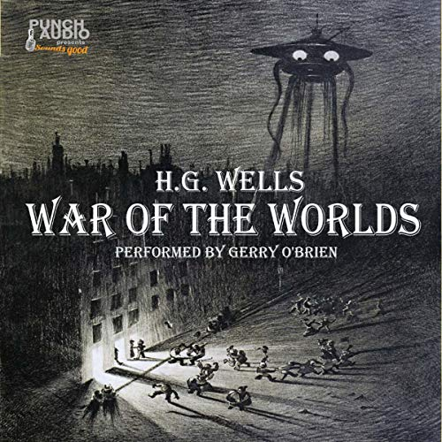
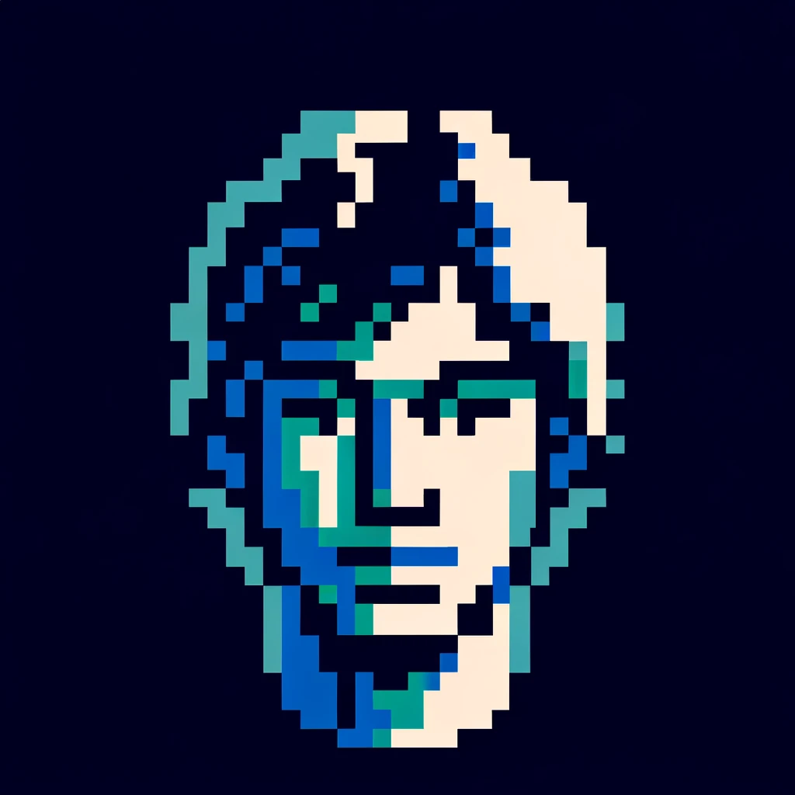
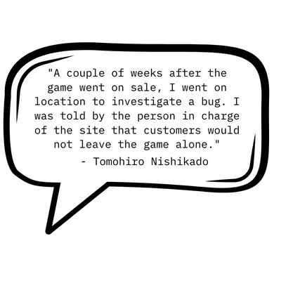

Space Invaders was an alien-shooting game created in 1978 by Tomohiro Nishikado. Although shooting games were popular at the time, they were mostly time-based; the user would try to shoot as many enemies/aliens/things etc before the clock ran out. Nishikado, introduced a lives system and interactive gameplay where multiple enemies attacked the player. Additionally, the player could hide behind shields that were chipped away with each enemy shot as the enemies traversed towards the player with increasing speed.
Nishikado initially experimented with shooting at tanks but felt that it didn't quite work. Inspired by H.G. Wells' "War of the Worlds," he instead opted for an alien invasion theme.
Interestingly, Space Invaders was considered a dud when it was first released, “It got low marks from vendors at the product launch because it was viewed as difficult to play” said creator, Tomohiro Nishikado. (Grannell 2023) But once it fell into the dextrous hands of gamers, who did not find it too difficult to play, it became the opposite of dud - extremely successful chartbusting, victorious, blockbuster megahit (an internet search told me these are the antonyms of “dud”).
 
Soon after, the demand for Space Invaders became so high that production sites had to work through the night to keep up.
Space Invaders allowed video gamers at the time to test their skills. The lukewarm reception and the ensuing roaring popularity show that, contrary to humankind’s ongoing attempts to make our lives easier, what we often actually crave is to do something that is almost “too difficult to play”.
References
- Grannell, C 2023, 'The “Space Invaders” Creator Reveals the Game’s Origin Story
- WIRED', Wired, 12 April, viewed 18 April 2023,